Mark Kim
AI Engineer
I am an AI engineer with extensive experience in Generative AI, LLMs, and agentic workflows, combining research, development, and production implementation. I have hands-on experience building end-to-end AI systems, including backend services, model serving, and API integration, while leading agentic workflow projects.
I am an out-of-the-box thinker, tackling challenging AI problems with innovative, practical solutions. Driven by a deep curiosity for AI, I spend time every day exploring new research, experimenting with ideas, and building on what I learn.
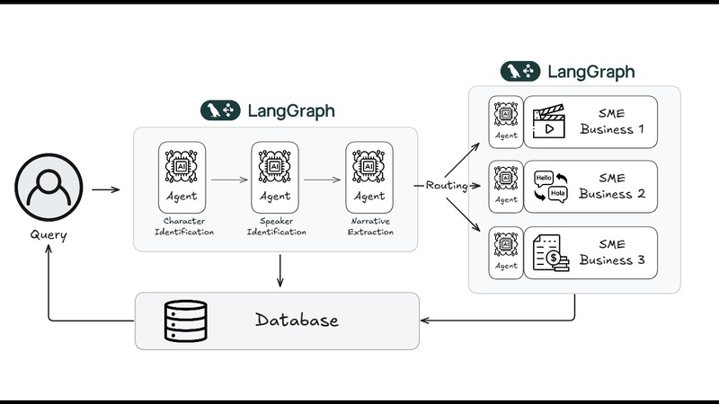
How WEBTOON built agentic workflows with LangGraph to scale story understanding
Career
Experience
Senior AI Engineer
- Built production-grade LLM pipelines and agentic workflows for large-scale, multi-language content localization
- Performance optimization and systematic experimentation across open-source and closed-source LLMs — improving accuracy, reliability, and observability
- Architected end-to-end generative image systems using Stable Diffusion and GANs for global B2C services, including scalable inference pipelines, automated quality control, and NSFW filtering
AI Engineer — Gen AI & Computer Vision
- Developed GAN-based and deep learning computer vision models for manufacturing quality inspection
- Designed scalable AI training and inference workflows for semiconductor, display, and chemical sectors
- Built graph-based fraud detection algorithms; first application of graph embedding models for banking in Korea
Data Scientist
- Developed machine learning models for client-facing projects across banking, insurance, and telecom industries
- Built fraud detection scorecards, customer relationship clustering algorithms, and VoC classification systems
Quality & Marketing Data Analyst
- Vehicle quality and marketing data analysis; provided insights to improve product quality and marketing strategies
Education
Work
Key Projects
Selected production systems and research prototypes I've designed and shipped.
Agentic Content Localization Platform
- Agentic AI workflow powering ~40% of international content titles, processing 2,000+ episodes/month
- Context-aware multi-language translation with glossary retrieval, ID consistency, and guardrail mechanisms
- FastAPI + Celery distributed architecture supporting 30+ hour batch workloads with horizontal scaling
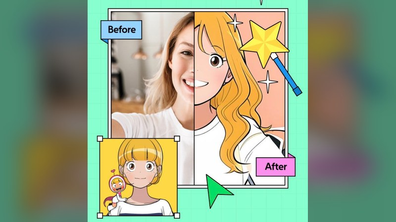
ToonFilter — Global B2C GenAI Product
- Technical lead for AI modelling; exceeded 20M+ real-world inferences globally
- Stable Diffusion + LoRA + ControlNet pipelines optimised for quality and low latency
- Automated quality control and NSFW filtering using CLIP and BLIP for safe global deployment
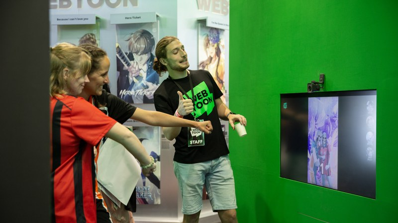
WebtoonMe — Generative AI Flagship
- GAN-based image-to-image models with TensorRT and ONNX inference optimization for real-time performance
- Innovation Award winner (2022); research published at CVPR and SIGGRAPH Asia
- Translated research prototypes into production-ready demos for global audiences

RAG Chatbot for Creators
- Production-grade creator-facing RAG chatbot serving 500+ active creators
- Vector search, structured prompt orchestration, and evaluation-driven optimisation
- Reduced hallucination and improved answer relevance through systematic evaluation loops
AI Metadata & Highlight Extraction
- Automated extraction of key entities, narrative segments, and high-impact moments from large-scale serialized content
- Structured output pipelines using prompt layering and schema-based validation for consistency and reliability
- Enables downstream applications: short-form video generation, search ranking, and marketing automation
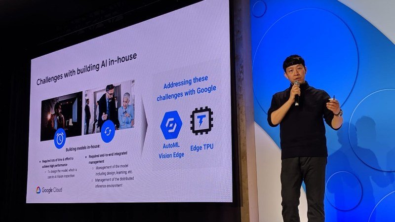
Computer Vision & AI Platform — LG CNS
- Built GAN-based and deep learning computer vision models for automated defect detection in semiconductor, display, and chemical manufacturing
- Developed core classification, detection, and segmentation modules for LG's enterprise AI training platform (LG DAP)
- Optimised inference pipelines using TensorRT and AMP; presented platform at ICCV 2019
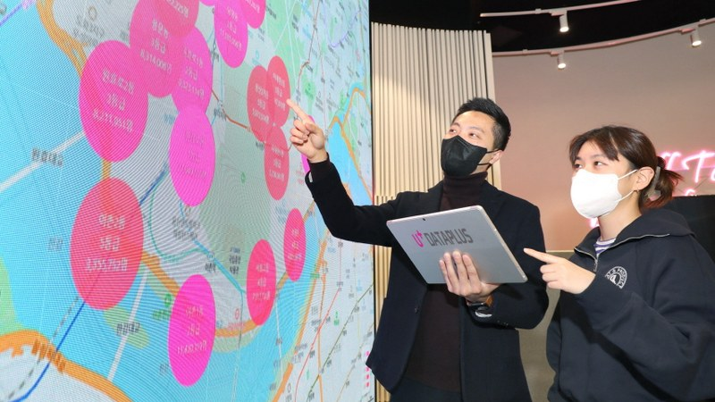
Enterprise ML & Data Science — LG CNS
- Delivered ML solutions across banking, insurance, and telecom — fraud detection scorecards, customer relationship clustering, and VoC classification
- First application of graph embedding models for banking fraud detection in Korea (Node2Vec, KB Bank)
- DL-based machine vision system for LG Display; improved defect classification accuracy from 32% to 65%
Publications
Research
Peer-reviewed work across generative AI, computer vision, and human-computer interaction.
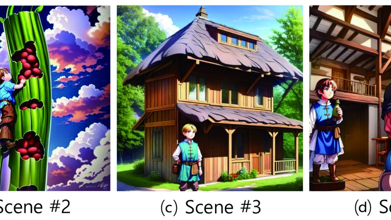
VisAgent: Multi-Agent Framework for Story Visualization
A multi-agent AI system that automatically generates visual panels from story narratives, coordinating specialized agents for scene composition and character rendering. Addresses the challenge of narrative-coherent visual generation at scale.
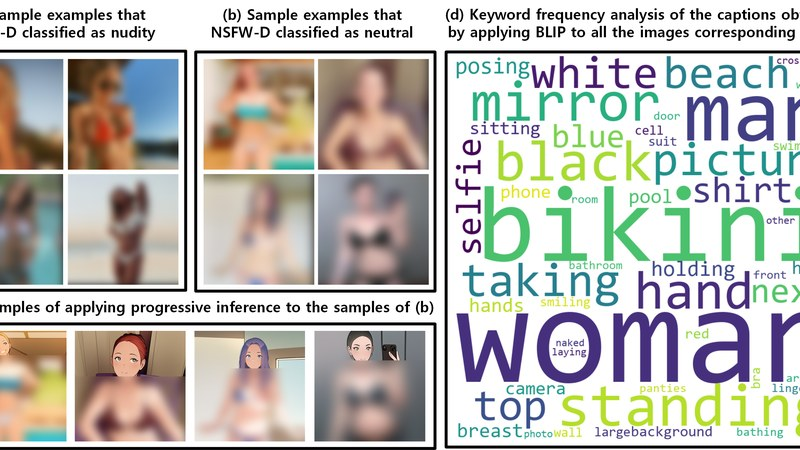
A Framework for Portrait Stylization with Skin-tone Awareness and Nudity Identification
Production-ready portrait stylization framework with perceptual skin-tone preservation and automated content safety filtering, enabling high-quality and safe deployment at global scale.
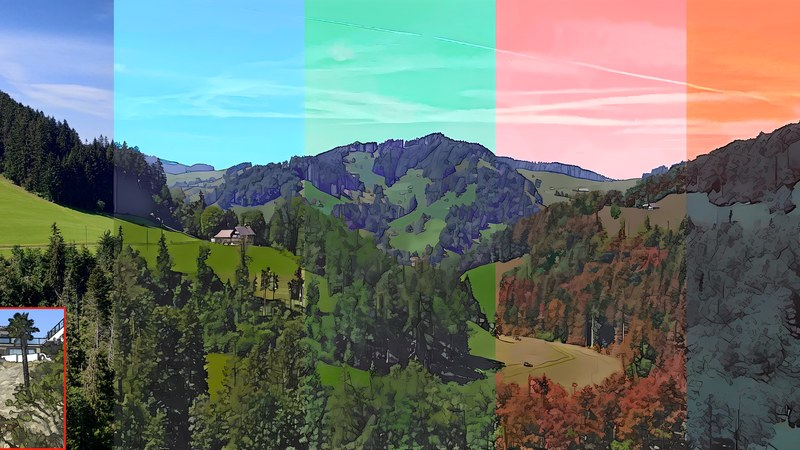
Interactive Cartoonization with Controllable Perceptual Factors
Framework enabling fine-grained user control over real-image cartoonization through adjustable perceptual attributes — including color palette, texture, and structural fidelity — without retraining.
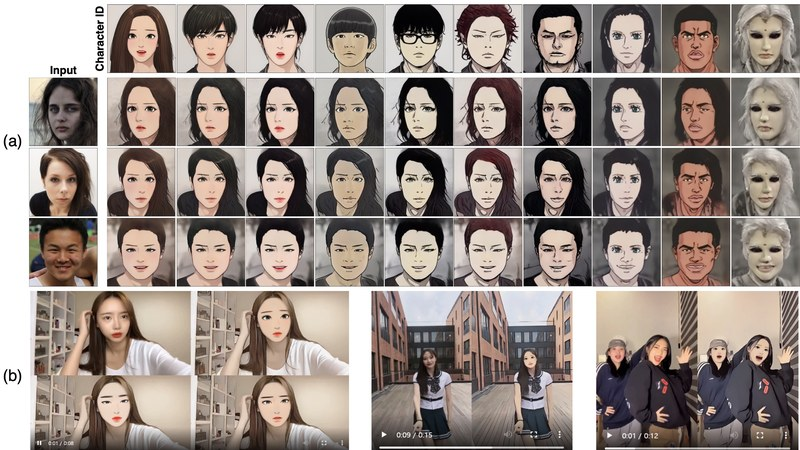
Cross-domain Style-mixing for Face Cartoonization
Technique for mixing visual styles across cartoon domains to produce diverse, controllable face cartoonization outputs with smooth interpolation between distinct artistic styles.
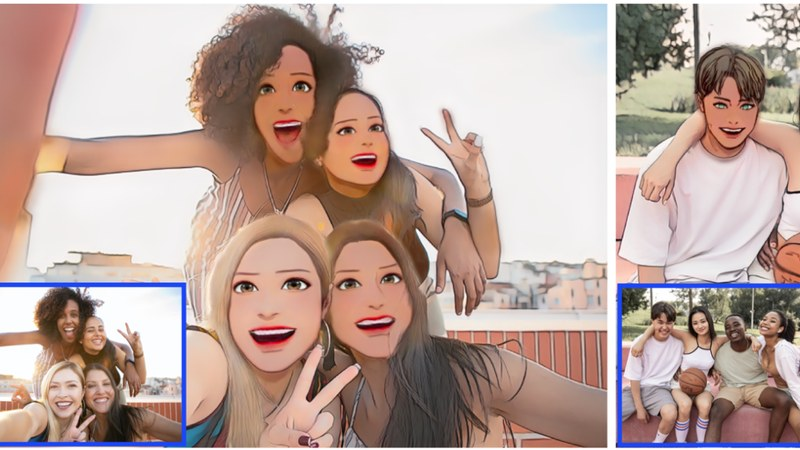
WebtoonMe: A Data-Centric Approach for Full-Body Portrait Stylization
Data-centric pipeline demonstrating that systematic dataset curation and quality control substantially outperform architecture-only improvements for full-body portrait stylization in webtoon style.
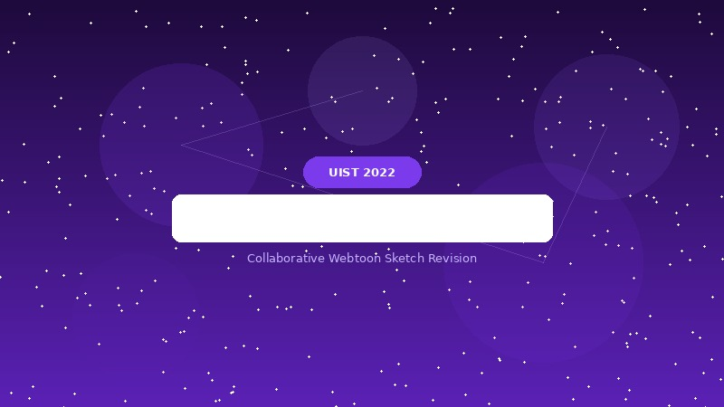
We-toon: A Communication Support System between Writers and Artists in Collaborative Webtoon Sketch Revision
AI-assisted collaborative tool bridging communication between webtoon writers and artists during sketch revision, offering intelligent suggestions and interactive visual feedback.
Intellectual Property
Patents
Patents
Contact
Let's connect
Open to interesting conversations about AI engineering, research, and collaboration. Based in Sydney, Australia (AEST).